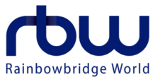

 RBW (Hangul:알비더블유; an acronym for Rainbow Bridge World) is a South Korean entertainment company founded by Kim Jin-woo (Hangul: 김진우) and Kim Do-hoon (Hangul: 김도훈) The label is home to artists such as Mamamoo, Vromance, Jin-Ju, Onewe and Oneus.